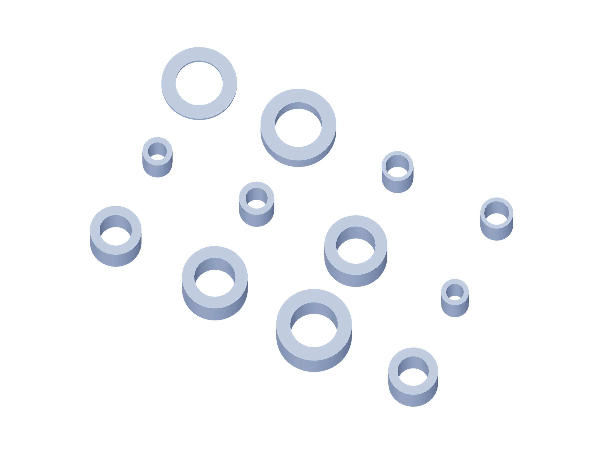

Kit / fabrication15 / 179
Metal kit / 9
6061 aluminum dimensions are finished blank sizes. Bought angles remain angles; shafts, bearings and guide blocks are separate purchased parts.

| Part | Qty | Finished blank / mm |
|---|---|---|
shaft-capture-tube-14p65 | 1 | 20 × 20 × 14.65 |
shaft-capture-tube-11p50 | 2 | 20 × 20 × 11.5 |
shaft-capture-tube-9p50 | 1 | 20 × 20 × 9.5 |
shaft-capture-tube-15p15 | 1 | 20 × 20 × 15.15 |
shaft-capture-tube-25p15 | 2 | 20 × 20 × 25.15 |
shaft-capture-tube-21p50 | 1 | 20 × 20 × 21.5 |
shaft-capture-tube-12p00 | 1 | 20 × 20 × 12 |
shaft-capture-tube-27p15 | 1 | 20 × 20 × 27.15 |
shaft-capture-tube-1p15 | 1 | 20 × 20 × 1.15 |
shaft-capture-tube-5p50 | 1 | 20 × 20 × 5.5 |
nut-outer-angular-metal-spacer | 16 | 8 × 8 × 9.51221 |
nut-outer-pitch-metal-spacer | 8 | 8 × 8 × 9.16337 |
Use gun-positioner-drill-templates.pdf at actual size. The 3D STEP and registered projections govern formed angles and hub faces.